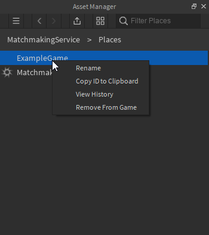

Getting Started
Getting the module
While I personally recommend requiring the module directly by id to stay up to date, there are a number of reasons why you may choose to not do this. For this reason the module itself is available to add to your roblox inventory here.
Preface
Matchmaking Service requires at least 2 games in a single universe to work. We call these hub servers and instance servers. Your hub servers are responsible for adding players to queues. Your instance servers are where the actual game will take place, this is where you want all of your game logic to go. We'll be starting off with the basic hub server logic.
Matchmaking Service currently utilizes a central server to handle all matchmaking. We are looking into ways to distributing this and having a fully decentralized hub for performance, but no great solution has been found. For this reason I do not recommend having 1 player max hub servers as that means it's constantly switching central servers which is less than ideal.
Hub logic
Obtaining the MatchmakingService Singleton
Matchmaking Service utilizes a top-level singleton. This means every time you require it and invoke GetSingleton in the same server the same singleton is returned. Getting this singleton is really simple:
local MatchmakingService = require(7567983240).GetSingleton()
-- You may opt to use a direct path to it if you don't want to require by id
Setting the instance server
As said in the preface, Matchmaking Service uses hub servers and instance servers. Instance servers are your game servers. They are the place players are teleported to when a match is found. For this step you will need the place id of your instance server. This is simple to obtain.
First, open the instance server's place in studio. Then in your console type print(game.PlaceId). The result is the place id that you will need for this step. Alternatively, use the asset manager and right click on the place and "Copy ID to clipboard":

local MatchmakingService = require(7567983240).GetSingleton()
MatchmakingService:AddGamePlace("Map Name", placeIdYouCopied)
-- Instance and hub servers must exist in the same universe
And believe it or not, that's it. That is the most basic implementation of a hub server without changing any of the values.
Setting the player range
The player range controls the min and max players for a game. If you think about many other multiplayer games, the game might start while the server is not full or it might want to wait for a full server to move players into the game. Using NumberRanges makes this functionality easy.
local MatchmakingService = require(7567983240).GetSingleton()
MatchmakingService:SetPlayerRange("Map Name", NumberRange.new(5, 10))
Queueing players
Queueing players is simple, you can do this from a gui remote event, on join or anywhere (from the server):
local MatchmakingService = require(7567983240).GetSingleton()
MatchmakingService:QueuePlayer(p, "unranked", "Map Name")
unranked lobby (note, just because it's unranked does not mean it's not rated. All rank types will have a rating attached to them, but it's up to you whether you want to update it or not). This means they will only search for other players in the same lobby. There are no huge limits on this, except I recommend to keep the size under 20 characters.
Queueing parties
Matchmaking Service provides an easy way to queue multiple players at the same time and ensure they get into the same game. However, Matchmaking Service will not handle forming parties or ensuring they're on the same team in instance servers, that is something you will have to do.
local MatchmakingService = require(7567983240).GetSingleton()
MatchmakingService:QueueParty(players, "unranked", "Map Name")
-- Players is a table of player objects
Removing single players from the queue
By default, Matchmaking Service will handle removing players from the queue when they get into a game or leave the hub. However, you may want to give them the option to remove themselves from queue, so Matchmaking Service exposes a method for this:
local MatchmakingService = require(7567983240).GetSingleton()
MatchmakingService:RemovePlayerFromQueue(player)
Removing multiple players from the queue
Removing multiple players from the queue at the same time is helpful to drastically reduce the number of calls to memory, which means lower chance of hitting the cap and breaking the system. This is also the easiest way to remove parties from the queue.
local MatchmakingService = require(7567983240).GetSingleton()
MatchmakingService:RemovePlayersFromQueue(players)
--- Players is a table of player objects
Instance server logic
Instance servers are also simple. This section will go over the most basic instance server implementation and everything that is required to make it work.
Denoating a server as a game instance
It's important to denote a server as a game instance as this removes the ability for it to become the central server, and removes logic that may impact game performance. You should set the player range to match that of the hub server You can choose to set the field directly, but I recommend that you use the built in method in case anything changes in the future:
local MatchmakingService = require(7567983240).GetSingleton()
MatchmakingService:SetIsGameServer(true)
Obtaining teleport data from the server
Data about the match is sent over the players' teleport data. This prevents additional calls to the memory store which means queues can run faster. I recommend doing this right in player join, but you could theoretically do it at any time you'd like.
game.Players.PlayerAdded:Connect(function(player)
local joinData = player:GetJoinData()
if _G.gameId == nil and joinData then
-- Global variables are not recommended in a lot of cases.
-- However, here it would be nice to have access to them,
-- regardless of scope. Mainly because this server instance
-- will be destroyed when the game is over so you needn't
-- worry about this causing long-standing memory leaks.
_G.gameId = joinData.TeleportData.gameCode
_G.ratingType = joinData.TeleportData.ratingType
end
end)
Starting the game
Starting the game is important because it tells the queue manager that the game is started, you can also pass a boolean value that determines whether or not the game is joinable still. By default the game will not be joinable if no value is passed.
function Start()
-- Start the game, but allow new joiners
MatchmakingService:StartGame(_G.gameId, true)
end
Manually removing a player from a game
You may manually remove players from games when they leave to open up spots for new players in games. You can do that with the following script. Note: for this to work properly, the player range in the hub server and instance server must match.
game.Players.PlayerRemoving:Connect(function(player)
MatchmakingService:RemovePlayerFromGame(player, _G.gameId)
end)
Ending the game
This step is extremely important and significantly reduces memory footprint of games. If you don't do this they will reside in memory until it's cleared. You must include these 3 lines of code. The only reason I don't implement it into the base system is because you may want to run actions before you remove a game.
game:BindToClose(function()
MatchmakingService:RemoveGame(_G.gameId)
end)
Updating rating
As noted previously, Matchmaking Service has a built in rating system. If you want to use it, you'll have to manually invoke the UpdateRatings function. If you don't invoke this function, the players' rating will never change and it'll be essentially the same as having no rating at all.
Updating rating must be done before BindToClose. This means that you will need your own end game functionality. This script is an example of one way you may choose to implement this functionality:
function EndGame(winner)
MatchmakingService:UpdateRatings(_G.ratingType, {2, 1, 3}, {team1, team2, team3})
for i, v in ipairs(game.Players:GetPlayers()) do
-- You can teleport them back to the hub here, I just kick them
v:Kick()
end
end
The line we'll be focusing on is as follows:
MatchmakingService:UpdateRatings(_G.ratingType, {2, 1, 3}, {team1, team2, team3})
_G.ratingType is the rating type they queued for. This is passed in teleport data
- {2, 1, 3} is the positional placements of each team (order is important, rankings[1] is paired to teams[1]). Lower is better. 1 means first place, 2 is second and so on. This supports any number of rankings, but it must match the number of teams.
- {team1, team2, team3} are the teams themselves. Each team is a table of players on that team (even if there is only 1 player, it must be in a table). The order is important as they are paired to the same index as their ranking.
That's really it for server instances. The only things you are required to do for a smooth experience is denoting the server as a game server and removing the game on close. Updating ratings is optional.
Full example scripts
Extremely basic 1v1 game hub server:
-- Obtain the service
local MatchmakingService = require(7567983240).GetSingleton()
MatchmakingService:SetPlayerRange("Map 1", NumberRange.new(2, 2)) -- 2, 2 means min players 2, max players 2 (or 1v1)
-- Set the game place, this game must exist in the same universe
MatchmakingService:SetGamePlace("Map 1", gamePlaceIdHere)
-- Queue players (you can call QueuePlayer from anywhere)
game.Players.PlayerAdded:Connect(function(p)
MatchmakingService:QueuePlayer(p, "queue", "Map 1") -- "queue" can be any string you want, so can the map
end)
for i, p in ipairs(game.Players:GetPlayers()) do
MatchmakingService:QueuePlayer(p, "queue", "Map 1") -- "queue" can be any string you want, so can the map
end
Extremely basic 1v1 game instance server (EndGame is not called in this example):
local MatchmakingService = require(7567983240).GetSingleton()
-- Tell the service this is a game server
MatchmakingService:SetIsGameServer(true)
local t1 = {}
local t2 = {}
-- Basic start function
function Start()
print("Started")
MatchmakingService:StartGame(_G.gameId)
-- Simple teams for a 1v1.
local p = game.Players:GetPlayers()
table.insert(t1, p[1])
table.insert(t2, p[2])
end
-- YOU MUST CALL UpdateRatings BEFORE THE GAME IS CLOSED. YOU CANNOT PUT THIS IN BindToClose!
function EndGame(winner)
MatchmakingService:UpdateRatings(_G.ratingType, {if winner == 1 then 1 else 2, if winner == 2 then 1, else 2}, {t1, t2})
for i, v in ipairs(game.Players:GetPlayers()) do
-- You can teleport them back to the hub here, I just kick them
v:Kick()
end
end
game.Players.PlayerAdded:Connect(function(player)
local joinData = player:GetJoinData()
if _G.gameId == nil and joinData then
-- Global so its accessible from other scripts if it needs to be.
_G.gameId = joinData.TeleportData.gameCode
_G.ratingType = joinData.TeleportData.ratingType
end
if #game.Players:GetPlayers() >= 2 then
Start()
end
end)
game.Players.PlayerRemoving:Connect(function(player)
MatchmakingService:RemovePlayerFromGame(player, _G.gameId)
end)
-- THIS IS EXTREMELY IMPORTANT
game:BindToClose(function()
MatchmakingService:RemoveGame(_G.gameId)
end)
Conclusion
As you can see, with under 50 lines of code, you can have fully functional cross-server match making. This is just the tip of the iceberg with Matchmaking Service as well. For more in-depth documentation see the main docs. If you encounter any issues don't hesitate to open an issue. If you need assistance, feel free to contact me on dev forum.